命令行下gradle的使用
project的创建
mkdir filename创建项目所在文件夹
gradle init创建项目
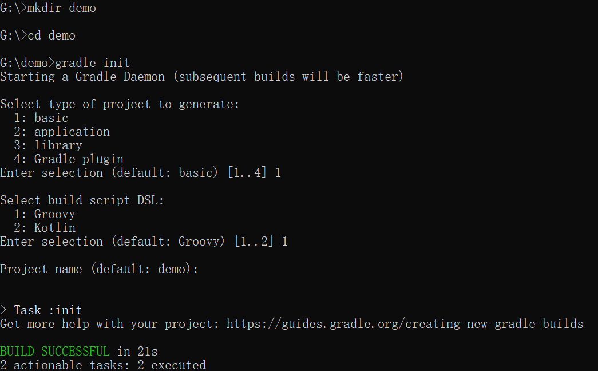
其中project type有四种类型分别是：
1、基础类型 2、应用类型 3、库类型 4、gradle插件
build script DSL（构建脚本语言）：
1、groovy 2、kotlin
创建的project里各文件的作用
gradle 包含gradle wapper的可执行库以及一些配置属性
gradlew、gradlew.bat分别是基于UNIX与WINDOWS的gradle wapper脚本
build.gradle项目配置脚本，用于配置当前项目中的任务
setting.gradle用于配置哪些项目参与构建的配置脚本
task的创建以及基本操作
task的创建（在build.gradle里创建）
task taskname(type, group, description,depensOn) {}
type:表示任务的种类，比如copy、zip等（必要）
group：表示任务所属的组（非必要）
description：表示对任务的描述（非必要）
depensOn：表示任务之间的依赖关系（非必要）
task compile {
doLast {
println 'hello compile'
}
}
task compile2 {
doLast {
println 'hello compiling2'
}
}
task compileTest(dependsOn:compile) {
doLast {
println 'hello compileTest'
}
}
dependsOn:compile 表示compileTest依赖于compile即在运行compileTest时会先执行compile在执行compileTest
task的运行以及查看
gradle taskname1 taskname2 按照先后运行名为taskname1、taskname2的任务
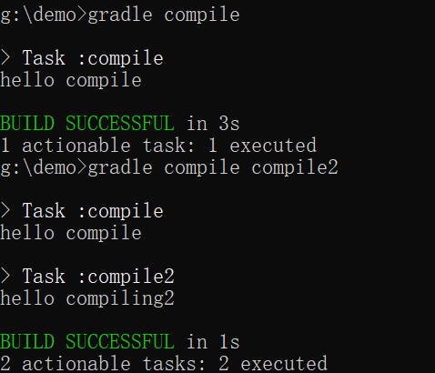
有依赖关系时：
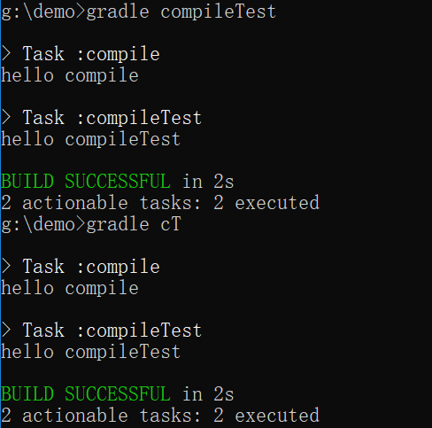
gradle tasks --all 查看所有任务
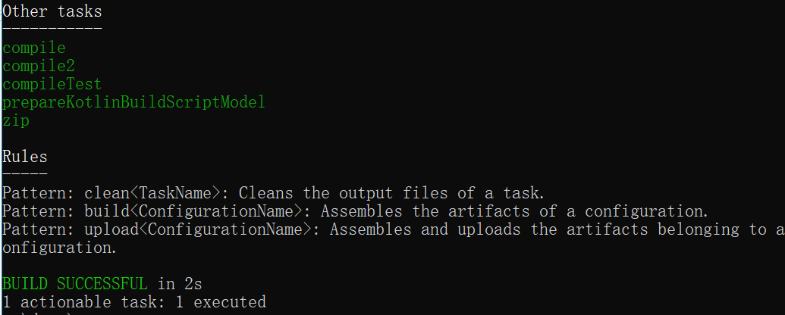
gradle help --task taskname查看taskname的详细信息
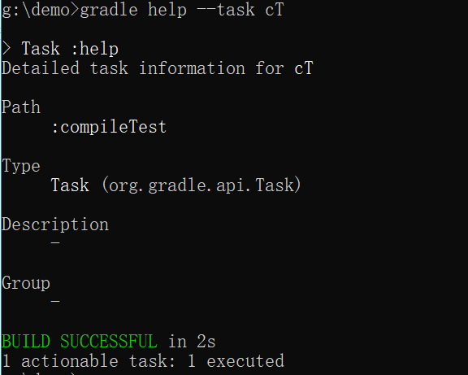
其中的type、description、group都是创建任务时就已经确定，path是关于build.gradle文件内的任务名
gradle taskname1 -x taskname2 运行taskname1但不运行taskname1里的taskname2任务，主要用来避免依赖关系的运行
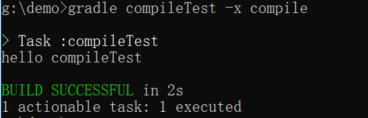
-m标签 使用此标签可以查看任务的执行顺序，并不会真的执行（适合多依赖关系）
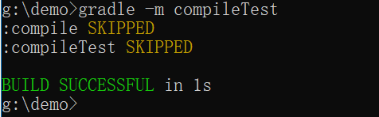
-q标签 简化输出内容，用来屏蔽其他辅助型的输出，只输出task的输出以及错误流
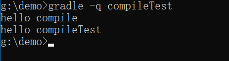
插件的使用
插件的使用需要在build.gradle文件里导入插件
plugins{
id "插件名"//比如 java,web,base等等
}
比如我需要对某个文件进行打包那么代码如下：
plugins {
id "base"
}
task zip(type: Zip) {
from "gradle"
archiveFileName = "demo1.zip"
}
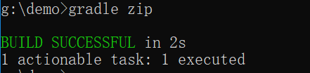
这里表示使用插件base将文件名为gradle的文件打包到名为demo1.zip的文件里。这些打包好的文件会统一放在项目里的新建build/distributions文件夹里（运行任务后自动创建）
注意这里需要表明task的类型type，若未注明则在任务执行时会报错
plugins {
id "base"
}
task zip {
from "gradle"
archiveFileName = "demo1.zip"
}
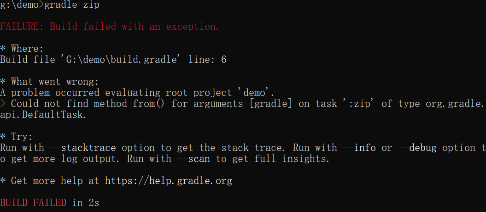
项目属性的查看
gradle properties 查看项目的所有属性
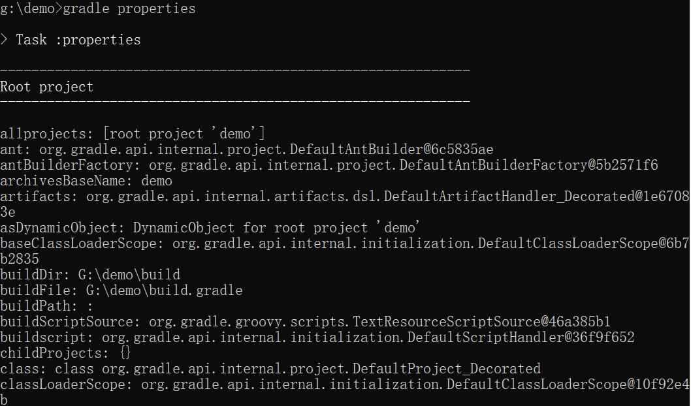
如果需要标注版本号，只需在build.gradle里插入：
version 1.0//版本号
之后再次查看项目属性时便可以看到版本信息
项目日志查看
gradle --profile
运行后在build/reports/profile(自动生成)会生成一个html文件打开便可以查看项目日志
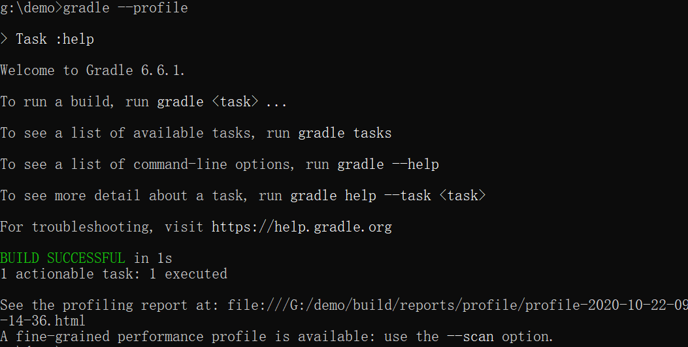
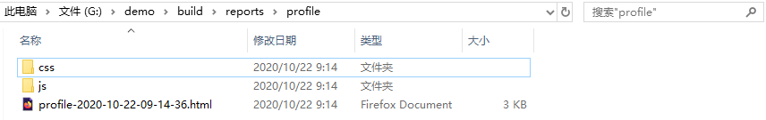
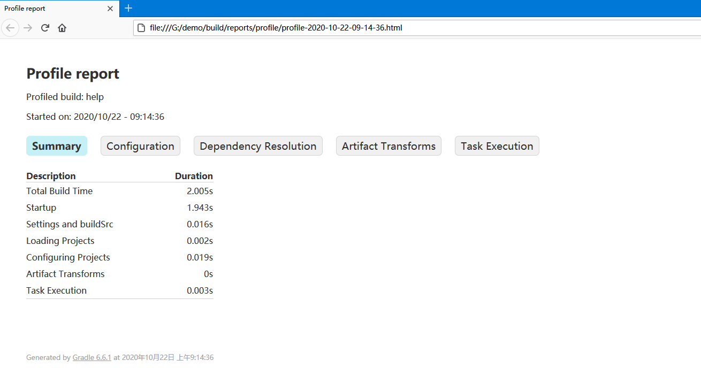
项目分享
gradle build --scan 使用后会生成链接
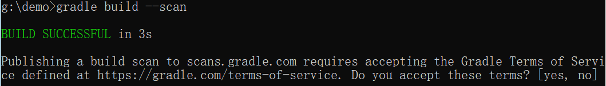
输入yes获取链接
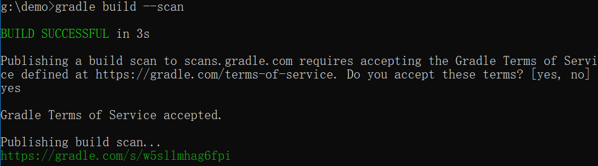
浏览器打开链接输入邮箱激活后便可进行分享
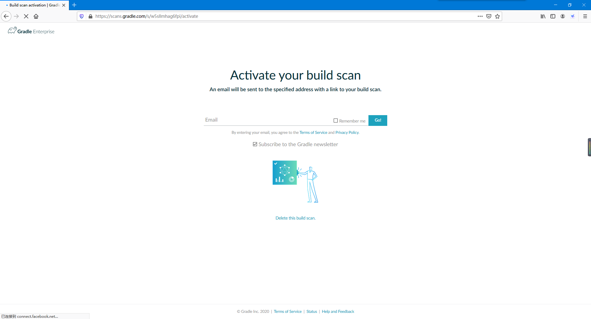